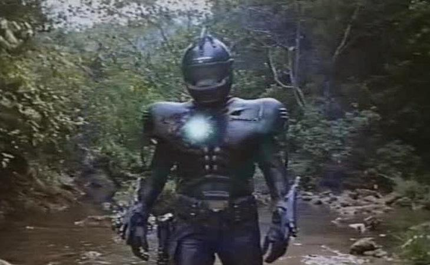
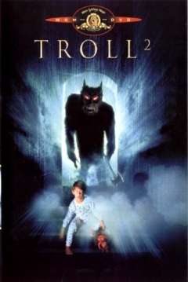
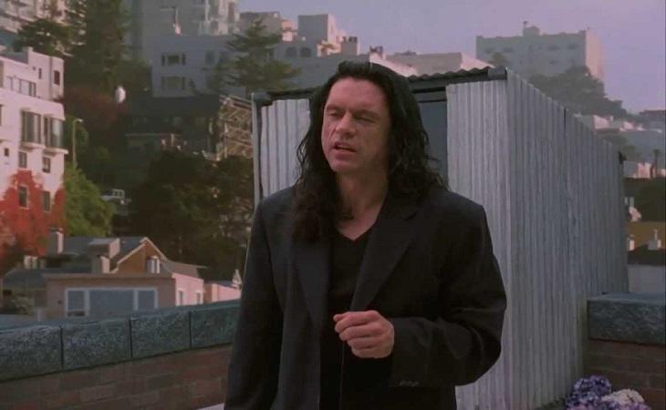
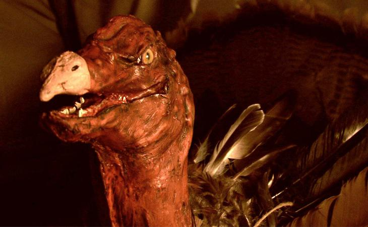
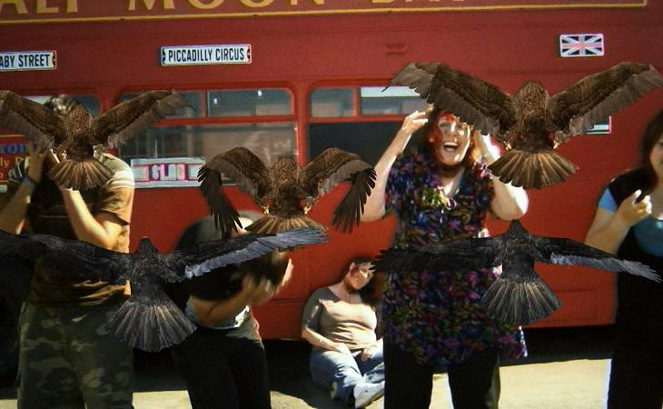
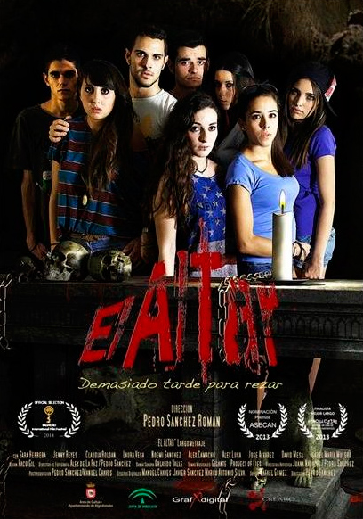
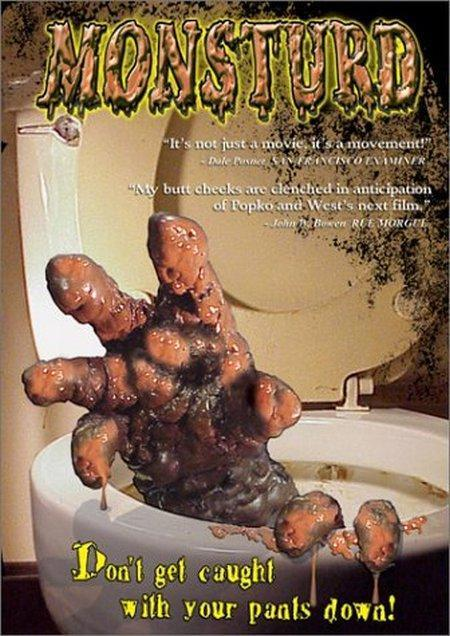
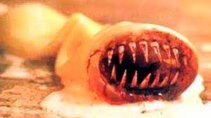
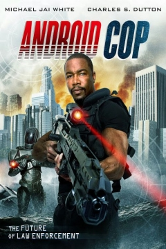
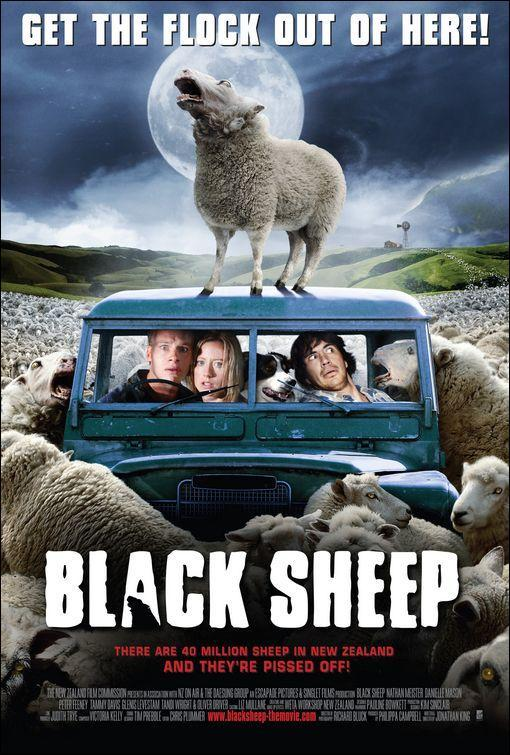

Que el cine de serie B ha otorgado grandes títulos a la historia del celuloide, es algo que a nadie le sorprende. Ni siquiera al espectador menos instruido le sorprende descubrir que bajos presupuestos no tienen porqué ir de la mano de resultados cualitativos nefastos.
Películas como 'La mujer pantera' o 'El carnaval de las almas' ya demostraron que lo indie partía, en muchas ocasiones, de grandes ideas. Así pues, el eterno debate de que el talento no va ligado al poder adquisitivo podría zanjarse si tuviéramos en cuenta los títulos citados (y muchísimos más que van desde los años treinta a la actualidad).
Sin embargo, esta afirmación es falsa, sobre todo si tenemos en cuenta que entre todo el océano de títulos que componen la serie B, existe muchísima morralla insalvable. Pero a veces, de entre todas esas surgen ejemplos que van un paso más allá, traspasando la frontera de lo malo y convirtiéndose por voluntad propia en los mejores films de todos los peores.
La ciencia ficción y el terror suelen ser los géneros reyes en eso de las "películas tan malas que son buenas", aquellas perfectas para ver en reuniones con amigos y cuyas intenciones parecen no quedar claras del todo por parte de quienes las llevaron a cabo. ¿De verdad se hicieron en serio? ¿O deberíamos rendir tributo a sus creadores por estar riéndose aún de nosotros, espectadores de tales casos de insulto al cine?
1. 'ROBOWAR'

De nuevo Italia nos trajo uno de los ejemplos de caspa cinematográfica de la que tener en cuenta de cara a listas como la aquí presente. En 1988 se estrenaba 'Robowar, dirigida por Bruno Mattei, responsable de 'Apocalipsis caníbal' y futuro perpetrador en 1990 de 'Terminator 2' (exacto, un año antes de que James Cameron presentase la auténtica secuela).
2. 'TROLL2'

Ojo. Que ha llegado el momento de hablar de la que muchísmos consideran como "la (mejor) peor película de terror de la historia". En 1986 John Carl Buechler había dirigido 'Torok, el troll', delirio de serie cuyo protagonista se llamaba Harry Potter Jr., pero eso es otra historia.
3. 'THE ROOM'

Que el éxito de 'The Disaster Artist' no nos nuble la vista: 'The Room' siempre será la peor película de la historia, aunque con matices.
Tommy Wiseau escribió, produjo, dirigió y protagonizó lo que él creía que iba a convertirse en el nuevo ejemplo de drama indie, aquellos que lo petan en Sundance y reciben el reconocimiento en el circuito de festivales. Financiada por el propio Wiseau, se dice que costó 6 millones (despilfarrados en una serie de decisiones de producción sin sentido que bien refleja James Franco en el reciente biopic), de los cuales apenas recaudó 2.000 dólares.
4. 'THANKSKILLING'

Lo habréis adivinado por el título: 'ThanksKilling' es una película de terror de bajo presupuesto centrada en Acción de Gracias (en inglés, Thanksgiving).
Son muchos los films de género que han explotado las festividades para presentarnos ejemplos de mayor o menor éxito con asesinos que matan en Navidad, San Valentín, Fin de Año o Halloween. Sin embargo, lo demencial de la película dirigida por Jordan Downey es mucho más fuerte que cuando Penny de 'The Big Bang Theory' interpretó a un híbrido entre mujer y gorila en 'Serial Ape-ost 2: Monkey see, Monkey Kill'. Y es que en 'ThanksKilling' el grupo de jóvenes en cuestión se las tendrán que ver con un pavo mutante psicópata. ¿Genialidad o locura? Juzgad vosotros tras ver el tráiler.
5. 'BIRDEMIC: SHOCK AND TERROR'

Se sospecha que el presupuesto para 'Birdemic: Shock and Terror' no llegó a los diez mil dólares. También se cree que lo de James Nguyen diciendo que esta es su carta de amor a 'Los pájaros' de Hitchcock es una tomadura de pelo, pero eso es más bien una opinión personal de quien escribe estas líneas.
6. 'EL ALTAR: DEMASIADO TARDE PARA REZAR'

Nerea es una chica que vive con su madre en una ciudad donde todavía no ha hecho muchos amigos. Con el fin de que Nerea conozca gente de su edad y salga de sus cuatro paredes, su madre la convence para que se vaya con un grupo de jóvenes vecinos a pasar un fin de semana a la Sierra. Esto no le gusta nada a algunos miembros del grupo y Nerea no lo tendrá nada fácil para hacer amistades.
Cuando se acercan a la casa rural que han alquilado, empiezan a descubrir cosas extrañas. ¿Tendrá algo que ver con un viejo Altar que encuentran en una cueva cercana? Pronto se dan cuenta de que se han metido en una aventura de la cual no será fácil sobrevivir.
7. 'EL ATAQUE DE LA MONTAÑA DE MIERDA (MONSTRUÑO O MONSTURD)'

Cuando el asesino en serie fugado Jack Schmitt muere en extrañas circunstancias en la planta de tratamiento del sistema metropolitano de alcantarillas, un profundo y oscuro problema se cierne sobre la ciudad. Un horripilante accidente en un laboratorio de estudios genéticos cercano conduce a la resurrección del asesino sediento de sangre y pronto, usando el alcantarillado como su mazmorra subterránea, Schmitt aplica su odiosa venganza sobre los atemorizados ciudadanos. Este es el trhiller que hace por los lavabos lo mismo que “Psicosis” hizo por las duchas. Acércate si te atreves. ¡Que no te cojan con los pantalones bajados!
8. 'EL CONDÓN ASESINO'

Basada en el famoso cómic de König. En un hotel de Nueva York un tutor chantajea a una estudiante para ir a la cama con él, pero cuando éste se pone un condón, el condón le arranca el pene con los dientes y desaparece. El detective Mackaroni lleva el caso, pensando que la chica ha atacado al profesor. Va al hotel y acaba en una habitación con un gigoló, pero de repente están interrumpidos por el asalto del condón asesino.
9. 'ANDROID COP'

En el año 2045, un policía detective de Los Ángeles y su nuevo compañero androide entran en la zona, una sección prohibida de la ciudad plagada de una enfermedad desconocida. Allí, descubren el origen de la enfermedad y tratan de detenerlo utilizando la tecnología y armamento del avanzado androide.
10. 'OVEJAS ASESINAS (BLACK SHEEP)'

En una remota granja de Nueva Zelanda un científico está realizando un irresponsable programa de ingeniería genética que intenta crear la "oveja perfecta". Cuando un grupo de ineptos activistas medioambientales deja en libertad a un cordero mutante, miles de ovejas se convierten en depredadoras sedientos de sangre cuyo objetivo es acabar con la raza humana...